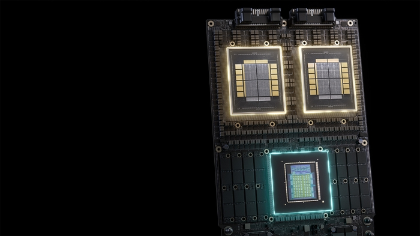

11 月 12 日，Nvidia 董事会用一份措辞极其标准的新闻稿宣布黄仁勋辞去总裁、CEO 和董事职务，即刻生效，CFO Colette Kress 出任临时 CEO。前两周的报道把这件事解释成一场个人丑闻：三段婚外情、其中一位女性被美国情报部门怀疑为中国间谍。但 11 月 14 日《华尔街日报》的报道把叙事整个翻了过来——真正让董事会动手的，是黄仁勋自己搭起来的那套客户融资担保机器，最大一笔规模 2500 亿美元。
一、背景：担保怎么变成了增长引擎
过去两年，Nvidia 的营收增长越来越依赖一种结构：由 Nvidia 为 AI 云厂商和数据中心开发商提供财务担保，让对方拿着这份担保去借钱买 Nvidia 的芯片，而这些客户再把一部分收入分回给 Nvidia。逻辑上说得通——没有担保，这些新玩家根本借不到建 AI 工厂的钱；有了担保，芯片出货就能提前兑现。
这套计划由黄仁勋的女婿 Nico Caprez 推动，据 WSJ 报道，他向合作方承诺「快速交割」。到今年，Nvidia 平均每月参与的投资节奏已经推到每年数十亿美元的规模，今年累计参与 105 轮。数据中心从「客户的资本开支」变成了「Nvidia 的信用敞口」。
二、核心：2500 亿、砍一半、股价跌 5%
规模最大的一笔是跟 OpenAI 谈的俄亥俄数据中心，担保额度 2500 亿美元。消息公开当天，Nvidia 股价跌了 5%——市场读懂了这份担保的含义：它不是订单，是 Nvidia 把自己资产负债表的一部分押在了客户的偿付能力上。
Kress 上任临时 CEO 后做的第一件事，是把这个承诺减半。这不是财务上的小修小补，而是一次方向修正：她此前作为 CFO 就在内部质疑过这些担保该怎么估值、最终能带回多少回报，也试图约束 Caprez 的推进速度。据 WSJ 描述，黄仁勋在 8 月的一次内部会议上直接称她为「一只被车灯照住的鹿」，并把她的角色贬为只管报表的「reporting CFO」，说她没帮上战略和决策的忙。

董事会这边的说法完全是另一套。官方新闻稿里，新任董事会主席 Harvey C. Jones 表示「董事会对 Colette 和管理团队充满信心，公司的运营、客户承诺和产品路线图将不受影响」。Kress 自己的表态也很克制：会继续推进黄仁勋过去 33 年打下的基础。
三、各方反应：11.5 万个签名与一封伪造的信
外部的声音比董事会激烈得多。一份要求恢复黄仁勋职务的请愿书，到周六下午已收集超过 11.5 万 个签名，其中在职员工 5,965 人、前员工 1,108 人、股东 63,063 人；联署名单里有马斯克、Replit CEO Amjad Masad、Epic Games CEO Tim Sweeney 和 YC CEO Garry Tan。请愿书的措辞是：「黄仁勋应该得到正当程序，而不是私刑。」
「网上流传一封要求董事会恢复 Jensen 职务、并声称有我参与的信件——那封信是伪造的。即使它是真的，我也不会签。我为 Jensen 的离开感到悲痛，同时完全支持董事会。」
内部同样不平静。据 WIRED 报道，Nvidia 内部建议箱里一则由资深工程师在辞职前撰写的帖文，累积了超过 1,600 条评论，多数员工支持恢复黄仁勋的职位，并要求董事会先公布独立调查结果、再对员工做一次投票调查。真假信息混在一起，成了这场风波最难处理的部分。
四、深度解读：这不只是一家公司的人事变动
把时间线摊开看，事情的因果关系其实很清楚。Nvidia 的月度估值倍数从 5 月的 23 倍掉到 10 月的 16 倍，公司回以史上最大的股票回购；同时，几家大云厂商已经在规划采用替代芯片、降低对 Nvidia 的依赖。黄仁勋在 10 月柏林 GTC 上用一个日本拉面摊的故事敲打六位云 CEO：摊主不把汤全卖给一两个客人，所以能维持价格和客群——「你们没有在确立我产品的价值」。这段话泄露的是焦虑：客户集中度上升，议价权在往买方走，而担保换出货恰恰是把这种依赖再加深一层。
更宏观的层面，同一天 IMF 总裁格奥尔基耶娃在东盟峰会期间警告，全球经济正过度依赖 AI，AI 企业之间的循环融资规模已超过 1 万亿美元，其中约三分之二来自债务融资。她还给出了最坏情景：美股可能在 2026 年下跌 20%，2028 年全球产出比基准低 1.1%。Nvidia 那份 2500 亿美元的担保，正是这套循环融资结构里最显眼的一块砖。
所以「绯闻导致下台」这个解释过于方便。绯闻提供了时机和公关理由，但董事会真正要解决的是：一家占标普 500 约 6% 的公司，能不能继续用担保的方式替客户融资。Kress 把 2500 亿砍到一半，是这场转向的第一个动作，也是最诚实的一个信号。
五、一句话总结
黄仁勋留下的不是空缺的 CEO 办公室，而是一张 2500 亿美元的担保单——接下来 Nvidia 要证明的是，没有这张单子，AI 芯片还能卖得动。
原文：Jensen Huang's ouster likely traces back to Nvidia's risky business practices（THE DECODER 引 WSJ，2026-11-14）｜另见 NVIDIA 官方公告｜配图：NVIDIA Newsroom 媒体库